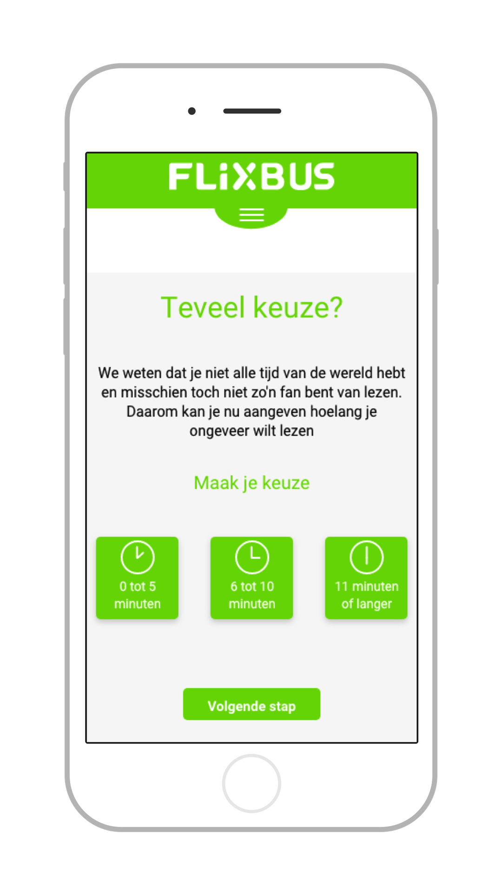
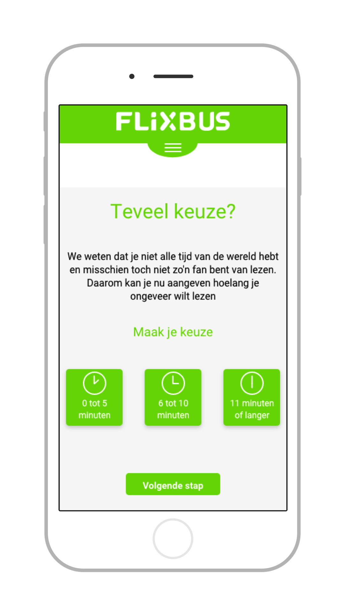
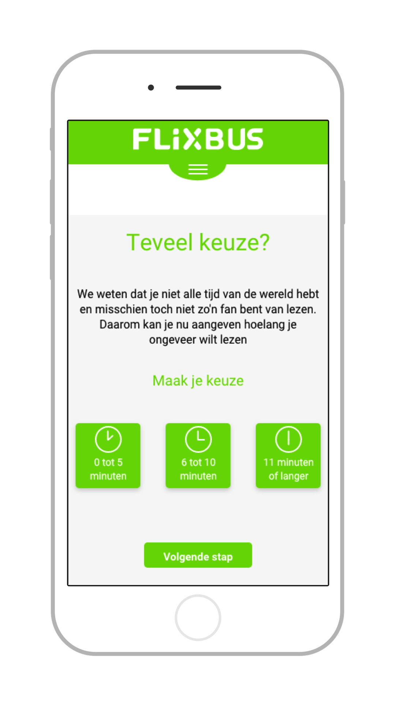

Deze fictieve opdracht voor Flixbus heeft als doel meer ervaring op te doen met huisstijlen, micro interacties en UI design. Middels
een verhalen website voor Flixbus met verhalen gebasseerd op de 99 stijloefeningen van Nurksmagazine
en de verschillende fases van een reis (voor, tijdens & na), heb ik een volwaardige prototype gemaakt inclusief micro interacties.
Met dit product heeft de gebruiker zowel voor als tijdens zijn reis iets te doen. Dit alles is in de huisstijl van Flixbus ontworpen.
De oplossing
Door de gebruiker voorafgaand aan de reis de mogelijkheid te geven om verhalen te zoeken en op te slaan. Kan de gebruiker deze
tijdens zijn reis makkelijk terugvinden.
Door het grote aanbod aan verhalen kan het lastig zijn om een leuk verhaal te vinden. Daarom kan je behalve filteren en sorteren
ook gebruik maken van de 'keuze hulp'. Dit is een sorteer menu interactief en leuk weergeven.
Voor de reis
Voorafgaand aan de reis kan de gebruiker verhalen zoeken en opslaan om later te lezen. Dit kan op zowel een laptop als mobiel,
hiervoor is wel een account nodig anders kan de gebruiker niet van desktop naar mobiel wisselen en dezelfde verhalen in een later lezen lijst terug vinden.
Om dit duidelijk te maken krijgt de gebruiker bij aankomst op de site al direct te zien dat de dienst meer functionaliteiten heeft als je een account hebt.
Flixbus organiseert busreizen binnen Europa, daarom heb ik ervoor gekozen een later lezen lijst te maken en geen download mogelijkheid.
Tegenwoordig heeft bijna iedereen wel een data bundel bij zijn abonnement en met het afschaffen van de roamingkosten is deze data bundel
geldig binnen heel Europa. Hierdoor is er geen noodzaak voor een download mogelijkheid.
Keuze Hulp

De keuze hulp is een manier om de verhalen te filteren. Door 2 keuzes te maken krijgt de gebruiker een overzicht van verhalen
die aansluiten bij de gemaakte keuzes. Zo wordt het makkelijker een keuze te maken uit de 99 verschillende verhalen, deze hoeven niet direct
gelezen te worden maar kunnen ook eenvoudig opgeslagen worden in de later lezen lijst.
Micro Interacties
In het prototype zijn meerdere micro interacties verwerkt. Sommige micro interacties zijn voor de leuk en voegen toe aan de beleving van de gebruiker.
De ander heeft een meer functionele toepassing.
Micro interacties - Later lezen
Als de gebruiker een verhaal toevoegd aan zijn later lezen lijst dan is het belangrijk dat de gebruiker ziet of zijn actie geslaagd is of niet.
Daarom wordt middels een micro interactie duidelijk gemaakt of het verhaal opgeslagen is of niet.
Micro interacties - Keuze hulp
Zoals eerder vermeld is er de mogelijkheid voor de gebruiker om middels 2 korte vragen een overzicht te krijgen van
verhalen die aansluiten bij hun wensen. Zo is de grote hoeveelheid content op een eenvoudige en leukere manier doorzoekbaar.
Om deze functionaliteit interesssanter te maken heb ik micro interacties toegevoegd. Als de gebruiker een thema selecteerd zal
het thema icoon animeren. Bijvoorbeeld deze smiley.
Prototype
De prototypes zijn gemaakt met Adobe XD. Op dit moment is er geen ondersteuning voor een responsive prototype.
Daarom heb ik 2 losstaande prototypes. Één voor mobiel en nog 1 voor desktop. Klik op de link hieronder om de prototypes te bekijken.


 
